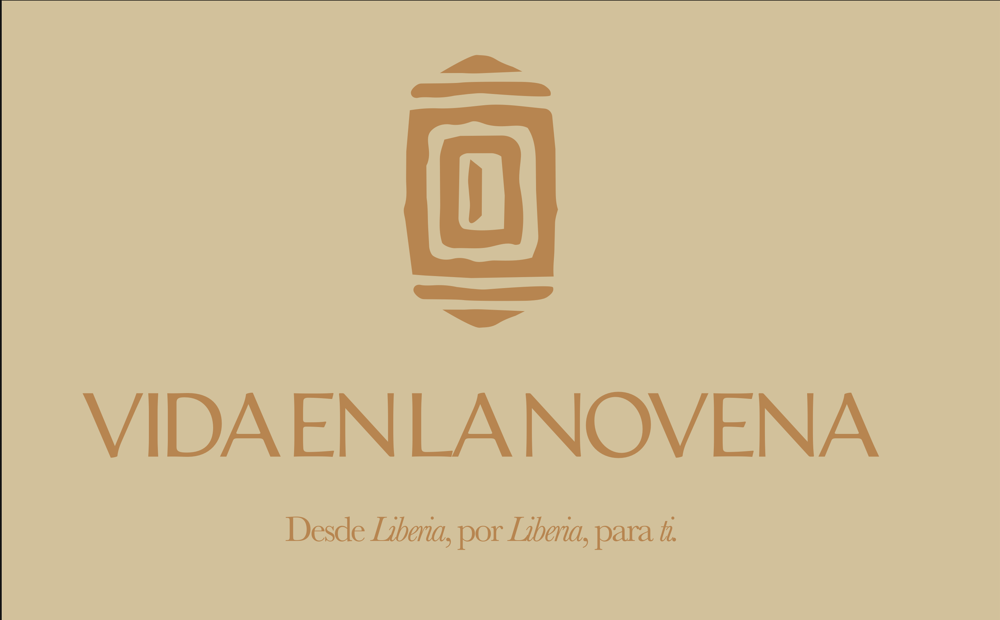
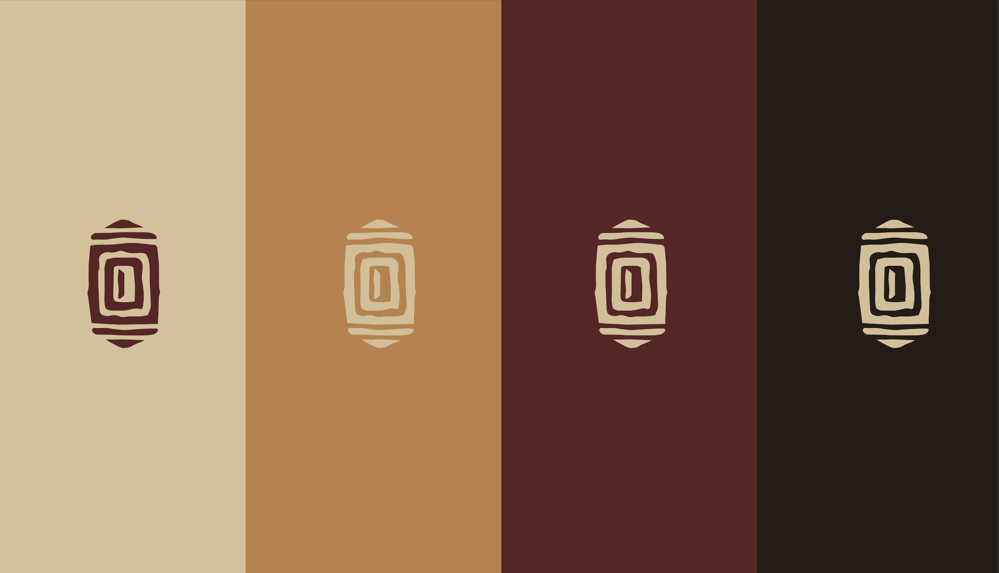
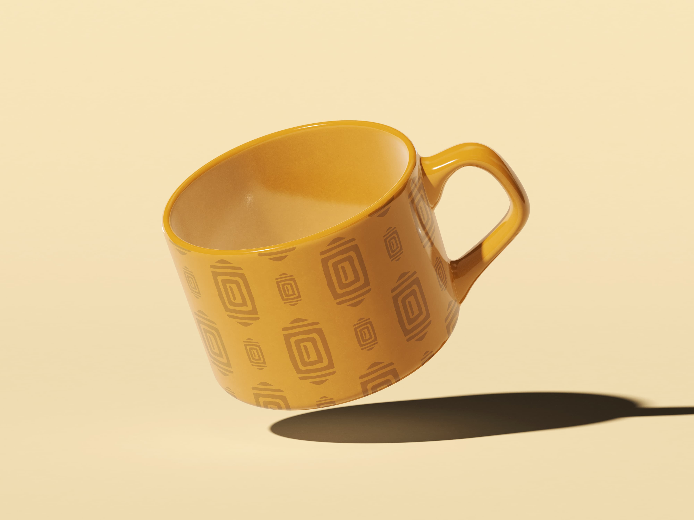
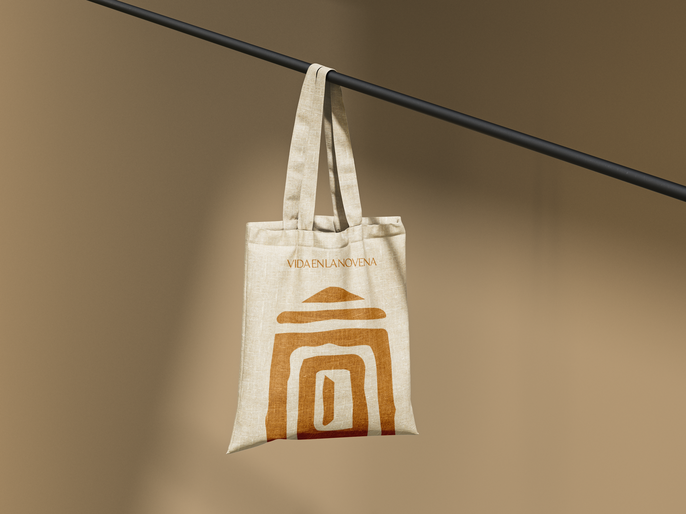
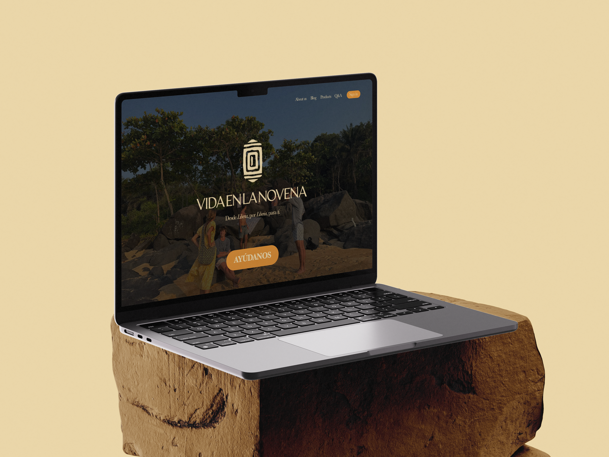
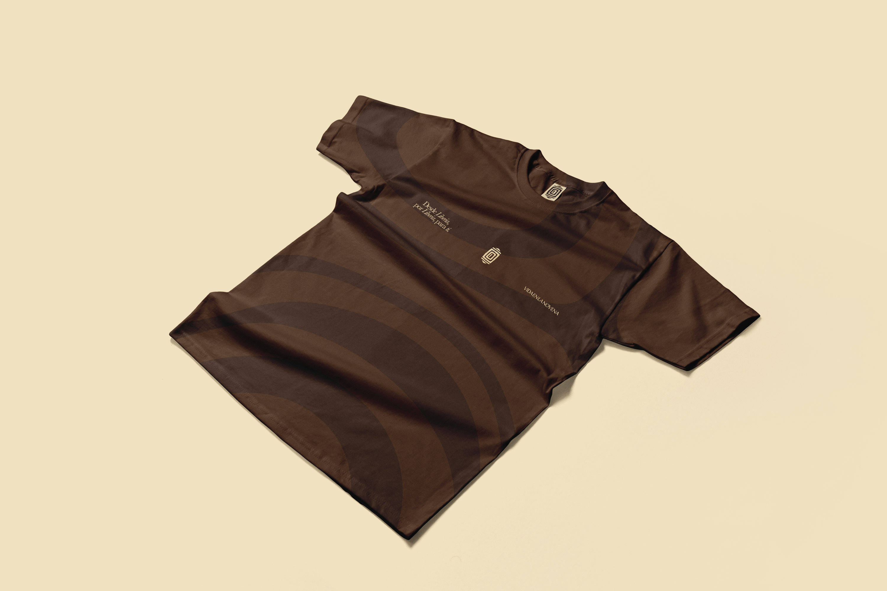

Vida en la Novena
Rebranding para una ONG de bolsos fabricados en Liberia
2026
Branding
Asignatura Albert Culleré
Illustrator, Photoshop
Vida en la Novena es una ONG que comercializa bolsos fabricados en Liberia con telas lapas tradicionales. El encargo, propuesto por el profesor Albert Culleré, consistía en realizar un rebranding completo partiendo del análisis de la marca existente. El nuevo isotipo se inspira en las formas geométricas de las lapas y en la Casa de Ramón, sede de la organización. La paleta de cuatro colores, crema, ocre, granate y marrón oscuro, recoge la calidez de los tejidos y la identidad africana de la marca. Las tipografías seleccionadas fueron Artifex Hand CF para el logotipo y Baskerville para los textos, combinando artesanía y tradición. El sistema de identidad se aplicó a papel de regalo, taza, camiseta, lanyard, tote bag, bolígrafo y web mockup, con el tagline: Desde Liberia, por Liberia, para ti.





